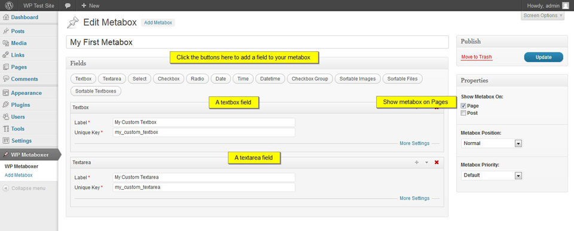
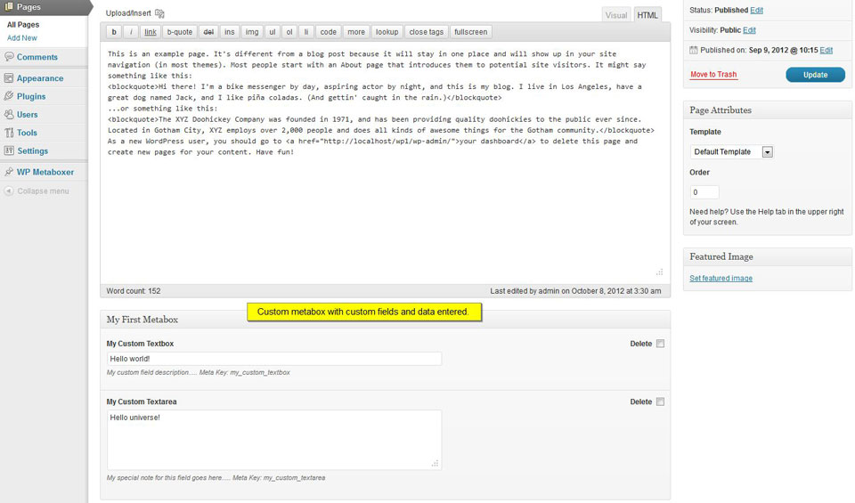

Create WordPress metaboxes with ease. Provides an easy to use interface for building metaboxes with many field types to choose from.
Create WordPress metaboxes with ease. Provides an easy to use interface for building metaboxes with many field types to choose from.
Features:
The following field types are available:
Install via WordPress Admin
Install via FTP
The steps for adding a metabox is simple and straightforward. It is similar to adding a WordPress post or page. Below are steps to add a metabox:
To check your newly added metabox, go to Admin > Pages > Add New if you checked Page in the Properties panel. If you checked Post then go to Admin > Posts > Add New. You should now see your metabox with the title that you specified.
However, the metabox has no fields yet. To add fields, head over to the Adding Fields section.
Note: If you have not created a metabox yet, please check the Adding a Metabox section.
In this example we will be adding a Textbox and Textarea to our metabox.
Note: Textboxes and other fields have additional options that can be accessed by clicking "More Settings" in a fields box. For more info on what these options are, check the Field Settings Referrence section.
Adding a Textarea

WP Metaboxer in Action
Whereas the previous sections refer to the WP Metaboxer's builder screen, this section refers to the actual usage of your custom metabox and custom fields inside the Post or Page edit screen.
Note: If you have not added the fields yet, please check the Adding Fields section.
To add data to your custom fields:

Custom Metabox With Fields and Data
This field uses WordPress Media Uploader. To add an image:
WP Metaboxer will fetch the thumbnail for the videos. Invalid urls will have no thumbnails returned.
Each field has a "Delete" checkbox at the right side. Check it on every field you wish to delete and click Update. This will delete the custom field data from the database.
Note: For selectboxes, it is important to add a blank option (option with value set to nothing) if you want its data to remain deleted on every Post/Page save.
This section describes how to access the data from the custom fields. It assumes you have a good understanding of WordPress themes and PHP.
WP Metaboxer utilizes WordPress Custom Fields API. WP Metaboxer provides two utility functions:
mtbxr_val - Get a single field's value by passing the Unique Key. Returns whatever value is saved for a field.
mtbxr_all - Get all fields from a post. Returns an array of values.
Using mtbxr_val, pass the field's Unique Key. For example, inside the WordPress loop, you can do this:
$my_textbox_value = mtbxr_val("my_textbox");
echo $my_textbox_value;
Optionally, you can specify the ID of a post. It is handy if you are using it outside the WordPress Loop:
$my_textbox_value = mtbxr_val("my_textbox", $post_id);
echo $my_textbox_value;
The mtbxr_all on the other hand will return an array of values of all custom fields associated with a post:
$my_fields = mtbxr_all(); $my_textbox_value = $my_fields['my_textbox'];
The advantage of mtbxr_all is you only need to call this function once to get all the field values.
Note: Since WP Metaboxer is using Custom Fields API you can still use the built-in WP functions like: get_post_meta and get_post_custom. However mtbxr_all, compared to get_post_custom, will simplify the array and will automatically unserialize the values for you.
This function applies only to Youtube and Vimeo fields. It will display the video in embedded format. That means it will show the video and its player in your page as if the video was embedded in your page.
To use it you need to pass along the Unique Key of your field. For example inside your template file:
echo mtbxr_video('vimeo_sample');
Since the Youtube and Vimeo fields are stored as an array, by default it will return the first video associated with the custom field. To specify a different video, use the index parameter. The index starts at 0.
Example - Display first video:
echo mtbxr_video('vimeo_sample', 0);
Example - Display second video:
echo mtbxr_video('vimeo_sample', 1);
This function applies only to Youtube and Vimeo fields. It will return an array of videos in embedded format. You can use a loop to display the videos.
if($youtube_videos = mtbxr_videos('youtube_sample')){
foreach($youtube_videos as $youtube_video){
echo $youtube_video;
}
}
Or you can point to a specific video to display by specifying the array index:
if($youtube_videos = mtbxr_videos('youtube_sample')){
echo $youtube_videos[0]; //First video
echo $youtube_videos[1]; //Second video
}
Date, time and datetime are stored as timestamp. You can use PHP's date function to output it to your preferred format.
Example 1 - Display Date:
$timestamp = mtbxr_val("my_custom_date");
echo date('M d, Y', $timestamp);
Will output date in this format: Oct 08, 2012. Of course the date will depend on the value of timestamp.
Example 2 - Display Time:
$timestamp = mtbxr_val("my_custom_time");
echo date('h:i:s A', $timestamp);
Will output time in this format: 07:25:10 AM. The time will depend on the value of timestamp.
Example 3 - Display Datetime:
$timestamp = mtbxr_val("my_custom_datetime");
echo date('F d, Y h:i:s A', $timestamp);
Will output something like October 08, 2012 07:28:49 AM. Output will depend on value of timestamp.
Sortable Images and Files are stored as an array of attachment ID.
Example 1 - Display Images:
$images = mtbxr_val('sortable_images_sample');
if( is_array($images) ){
foreach($images as $attachment_id){
$attachment_data = wp_get_attachment_image_src( $attachment_id, 'large' );
$image_url = $attachment_data[0];
?>
<img src="<?php echo $image_url; ?>" alt="" />
<?php
}
}
Here we loop thru the attachment IDs and used WP's wp_get_attachment_image_src function to fetch the url of the image.
Example 2 - Display Files:
$files = mtbxr_val('sortable_files');
if( is_array($files) ){
foreach($files as $attachment_id){
$file_url = wp_get_attachment_url( $attachment_id );
?>
<p><?php echo $file_url; ?></p>
<?php
}
}
Here we loop again thru the attachment IDs and used wp_get_attachment_url function to fetch the url of the files and display it.
Tip: A very handy method in inspecting what custom fields are associated with a post is by using print_r, or better yet, WP Metaboxer's mtbxr_debug:
echo mtbxr_debug( mtbxr_all() );
You can place this code inside your template files (eg. single.php, page.php...) preferably inside The Loop.
You can use mtbxr_video and mtbxr_videos function to display the videos in embedded format. You can also use mtbxr_all or mtbxr_val if you want to return the videos the way you entered it, that is in url format.
Example 1
echo mtbxr_video('vimeo_sample');
Example 2
if($youtube_videos = mtbxr_videos('youtube_sample')){
foreach($youtube_videos as $youtube_video){
echo $youtube_video;
}
}
Example 3 - First video, 500x300 dimension, with post ID specified
echo mtbxr_video('vimeo_sample', 0, 500, 300, $post_id);
This section contains the description of each field settings.
| Name | Description | Field |
|---|---|---|
| Label | The label of the field. | All |
| Unique Key | Use to identify the field. This key is used to fetch the value of the field. | All |
| Default | The default value of the field. Appears only if field value is empty. | Textbox, Textarea, Select, Radio, Checkbox and Checkbox Group |
| Note | A piece of text that appears with the field. Useful in providing additional info, to aid the user. | All |
| Sanitation | Can be: Allow HTML, No HTML or Raw. Only for Textboxes and Textareas. | Textbox, Textarea, Sortable Textboxes |
| Multiple | If true, will allow multiple options to be selected. Only for Selectboxes. | Select |
| Options |
Value - The value of an option that gets saved. Text - The text displayed to the user for an option. Only for Selectboxes and Radio |
Select, Radio |
| Checkboxes |
Value - The value of a checkbox that gets saved. Text - The label of the checkbox Only for Checkbox Group |
Checkbox Group |
| Datasource |
A callable function that returns an array of value and text to be used as options. Example Usage In the metabox builder screen, type mytheme_custom_options and inside your theme's function.php create a function named mytheme_custom_options:
function mytheme_custom_options(){
return array(
array(
'value'=>'',
'text'=>''
),
array(
'value'=>'1',
'text'=>'Male'
),
array(
'value'=>'2',
'text'=>'Female'
)
);
}
This will override the options you specified in the metabox builder screen. |
Select, Radio, Checkbox Group |
This section contains the field types that can be added to your custom metabox.
| Field | Description |
|---|---|
| Textbox | Allows single line text to be entered. Can allow/disallow HTML input or allow raw input. |
| Textarea | Allows multiline text to be entered. Can allow/disallow HTML input or allow raw input. |
| Select | Allows selection of a single option from a predefined list. Can be set to allow multiple option to be selected. Options can also be fetched from a datasource, a callable function that returns a formatted array of value and texts. |
| Checkbox | Allows checking or unchecking of a single option. Value can either be 0 or 1. |
| Radio | Allows selection of a single option from a predefined list. Can be set to allow multiple option to be selected. Options can also be fetched from a datasource, a callable function that returns a formatted array of value and texts. |
| Date | Allows input of date. Value is saved as a timestamp. |
| Time | Allows input of time. Value is saved as a timestamp. |
| Datetime | Allows input of date and time. Value is saved as a timestamp. |
| Checkbox Group | Multiple checkboxes that can be checked or unchecked. Option value and text can be specified. Options can also be fetched from a datasource, a callable function that returns a formatted array of value and texts. |
| Sortable Images | Allows uploading of new images or select already uploaded images via WP Media. Image order can be changed via drag and drop in the metabox builder screen. Stores attachment IDs of the images. |
| Sortable Files | Allows uploading of new files or select already uploaded files via WP Media. File order can be changed via drag and drop in the metabox builder screen. Store attachment IDs of the files. |
| Sortable Textboxes | Repeatable, sortable textboxes. Adds unlimited number of textboxes that can be sorted via drag drop in the metabox builder screen. |
| Vimeo | Repeatable, sortable vimeo videos. Just store the url |
| Youtube | Repeatable, sortable youtube videos. Just store the url |
Filters allow you to easily alter the data of WP Metaboxer.
| Filter | Description |
|---|---|
|
mtbxr_select_options |
Filters the select options for your select boxes. That means you can have customized options served from a function inside your theme. This is similar to using a Data Source but is much more powerful. If both Data Source and this filter are present, the filter overrides the Data Source. Example Usage Lets say you are building a list of countries using a select box and assign it a Unique Key "countries". It would be cumbersome to use the metabox builder screen since it will be a very long list. That us where this filter becomes handy.
function mytheme_filter_select_options($options, $field){
if($field['uid']=='countries'){
$options = array(
array(
'value'=> 'au',
'text'=> 'Australia'
),
array(
'value'=> 'us',
'text'=> 'United States'
),
array(
'value'=> 'uk',
'text'=> 'United Kingdom'
)
);
}
return $options;
}
add_filter( 'mtbxr_select_options', 'mytheme_filter_select_options', 10, 2 );
You can place this code inside your functions.php. The line
if($field['uid']=='countries'){
..will make sure that only this select field is filtered leaving the other select fields unchanged. Also make sure that you return the options properly: return $options; or else no options will appear for all select fields! Note: This is just an example, the real country list is waaay longer. If using filter is complicated for you there is always the data source way. Check out the Field Settings Reference section to learn more about the data source. |
|
mtbxr_radio_options |
Filters the radio options for your radio fields. That means you can have customized options served from a function inside your theme. This is similar to using a Data Source but is much more powerful. If both Data Source and this filter are present, the filter overrides the Data Source. Example Usage
function mytheme_filter_radio_options($options, $field){
if($field['uid']=='radio_sample'){
$options = array(
array(
'value'=> 'opt1',
'text'=> 'Option 1'
),
array(
'value'=> 'opt2',
'text'=> 'Option 2'
),
array(
'value'=> 'opt3',
'text'=> 'Option 3'
)
);
}
return $options;
}
add_filter( 'mtbxr_radio_options', 'mytheme_filter_radio_options', 10, 2 );
You can place this code inside your functions.php. The line
if($field['uid']=='radio_sample'){
..will make sure that only this select field is filtered leaving the other radio fields unchanged. Also make sure that you return the options properly: return $options; or else no options will appear for all radio fields! |
|
mtbxr_checkbox_group_options |
Filters the checkboxes for your checkbox group fields. That means you can have customized checkboxes list served from a function inside your theme. This is similar to using a Data Source but is much more powerful. If both Data Source and this filter are present, the filter overrides the Data Source. Example Usage
function mytheme_filter_checkbox_group_options($options, $field){
if($field['uid']=='checkbox_group_sample'){
$options = array(
array(
'value'=> '1',
'text'=> 'Checkbox 1'
),
array(
'value'=> '2',
'text'=> 'Checkbox 2'
),
array(
'value'=> '3',
'text'=> 'Checkbox 3'
)
);
}
return $options;
}
add_filter( 'mtbxr_checkbox_group_options', 'mytheme_filter_checkbox_group_options', 10, 2 );
|
|
mtbxr_field_note |
Filters the note for every field. Notes are displayed together with fields and provides additional info useful for the end-users. Example Usage
function mtbxr_field_notes( $note, $field ) {
$note .= ' Meta Key: '.esc_attr($field['uid']);
return $note;
}
add_filter( 'mtbxr_field_note', 'mtbxr_field_notes', 10, 2 );
This filters all the note for every fields. If you want to filter a specific field you can use a conditional check:
function mytheme_field_notes( $note, $field ) {
if($field['uid'] == 'checkbox_group_sample') {
$note = 'Please specify the correct value...';
}
return $note;
}
add_filter( 'mtbxr_field_note', 'mytheme_field_notes', 10, 2 );
|
Contain details about the utility functions. You can check the Accessing Your Data section for examples of using these functions.
mtbxr_val($key, $post_id=null)
Parameters:
string $key - Required. The uid of the field to fetch.
int $post_id - Optional. The Post ID to fetch the custom field from.
Returns mixed
mtbxr_all($post_id=null)
Parameters:
int $post_id - Optional. The Post ID to fetch the custom field from.
Returns array
mtbxr_debug($s)
Parameters:
mixed $s - Required. Any variable to print out in a readable way.
Returns string
mtbxr_video( $key, $index=0, $width=null, $height=null, $post_id=null )
Parameters:
string $key - Required. The uid of the field to fetch.
int $index - Optional. The index of the video.
int $width - Optional. The width of the embedded video.
int $height - Optional. The height of the embedded video.
int $post_id - Optional. The Post ID to fetch the custom field from.
Returns string
mtbxr_videos( $key, $width=null, $height=null, $post_id=null )
Parameters:
int $index - Optional. The index of the video.
int $width - Optional. The width of the embedded video.
int $height - Optional. The height of the embedded video.
int $post_id - Optional. The Post ID to fetch the custom field from.
Returns array